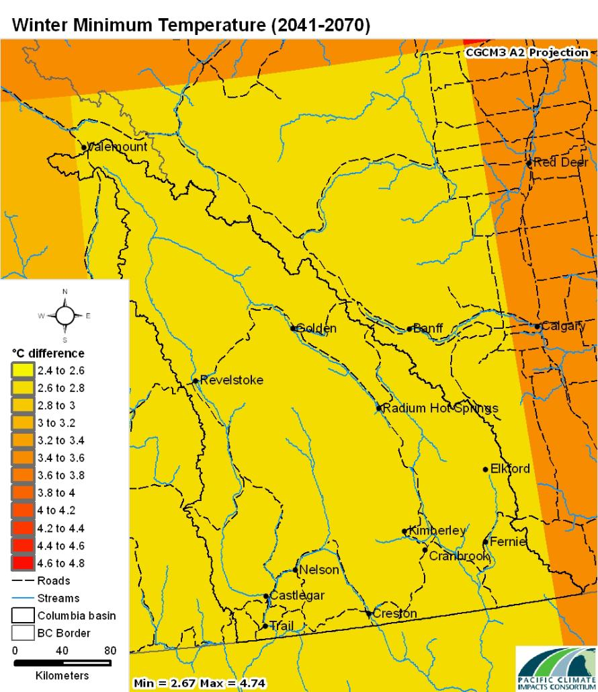
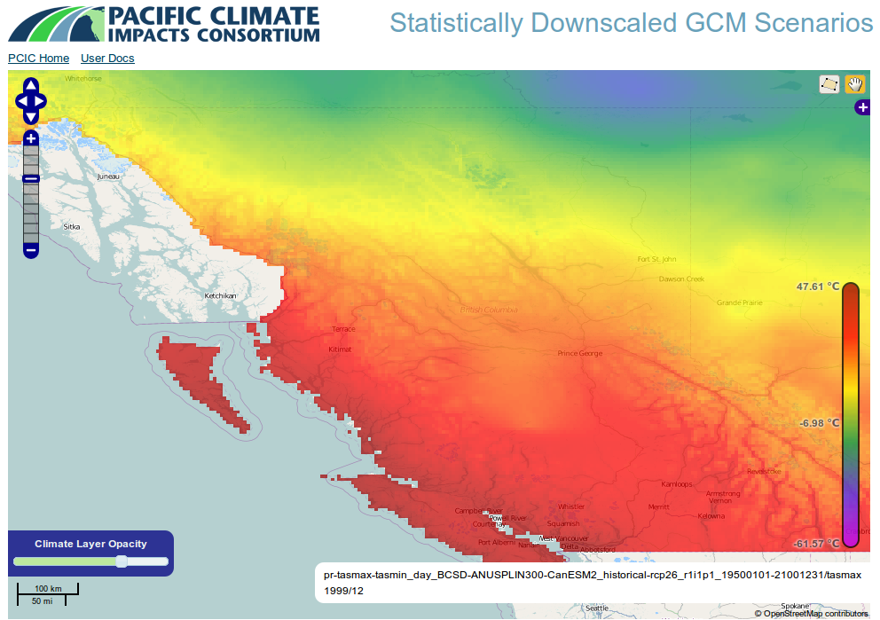

High performance climate downscaling in R
UseR! 2016
James Hiebert
2016-06-29
About me
Pacific Climate
Impacts Consortium
PCIC
E.g. hydro power
E.g. stormwater runoff
E.g. sea level rise
E.g. glacier melt
E.g. glacier melt
E.g. forest fire
Global (and Regional) Models
Coarse resolution


Downscaling

BCCAQ
Bias Corrected Constructed Analogues
(with Quantile mapping)
http://journals.ametsoc.org/doi/10.1175/JCLI-D-14-00754.1
BCCAQ Flowchart
Challenges: Data Volume
\(n \) emission scenarios
\(\times\)
\(m \) GCMs
\(\times\)
\(o\) RCMs
\(\times\)
variables
\(\times\)
space
\(\times\)
time
Big Data
Source: CEC-500-2007-123
BCCA Complexity/Run time
\(O( t_{obs} \times t_{GCM} \times C )\)
BCCA: 30-72 hours!
Refactoring
| Before
| After
| 3k LOCs
| 1400 LOCs
| 500 LOCs config
| 50 LOCs config
| 25 files
| 13 files
The ClimDown package
- https://github.com/pacificclimate/ClimDown
- Not on CRAN (yet)
> devtools::install_github('pacificclimate/ClimDown', ref='release')
CI: check

Dependencies
Imports:
PCICt,
udunits2,
ncdf4,
fields,
foreach,
seas,
abind
User Interface
hiebert@aether:~/code/ClimDown$ grep export NAMESPACE
export(bcca.netcdf.wrapper)
export(bccaqv2.netcdf.wrapper)
export(bcci.netcdf.wrapper)
export(qdm.netcdf.wrapper)
export(qpqm.netcdf.wrapper)
> *.wrapper('gcm.nc', 'obs.nc', 'out.nc', 'varname')
Parallelization
- Use foreach package
- User configurerd parallel backend
> library(doParallel)
> registerDoParallel(cores=4)
> bccaq.netcdf.wrapper()
"High performance"?
"High performance"!
- 5x speedup of QPQM
- 14,000x speedup of BCCA grid mapping
- 8x speedup on BCCA
- 12,000x reduction of BCCA output space (lazy eval FTW)
Next Steps
- Performance
- Stop copying data!
- Order of magnitude improvement on BCCA
- More sophisticated parallelization?
- Validity
Conclusions
- Climate data is big
- Downscaling is computationally expensive
- We wrote ClimDown to help
- Improvements are ongoing